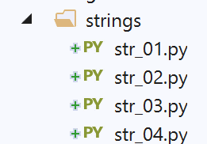
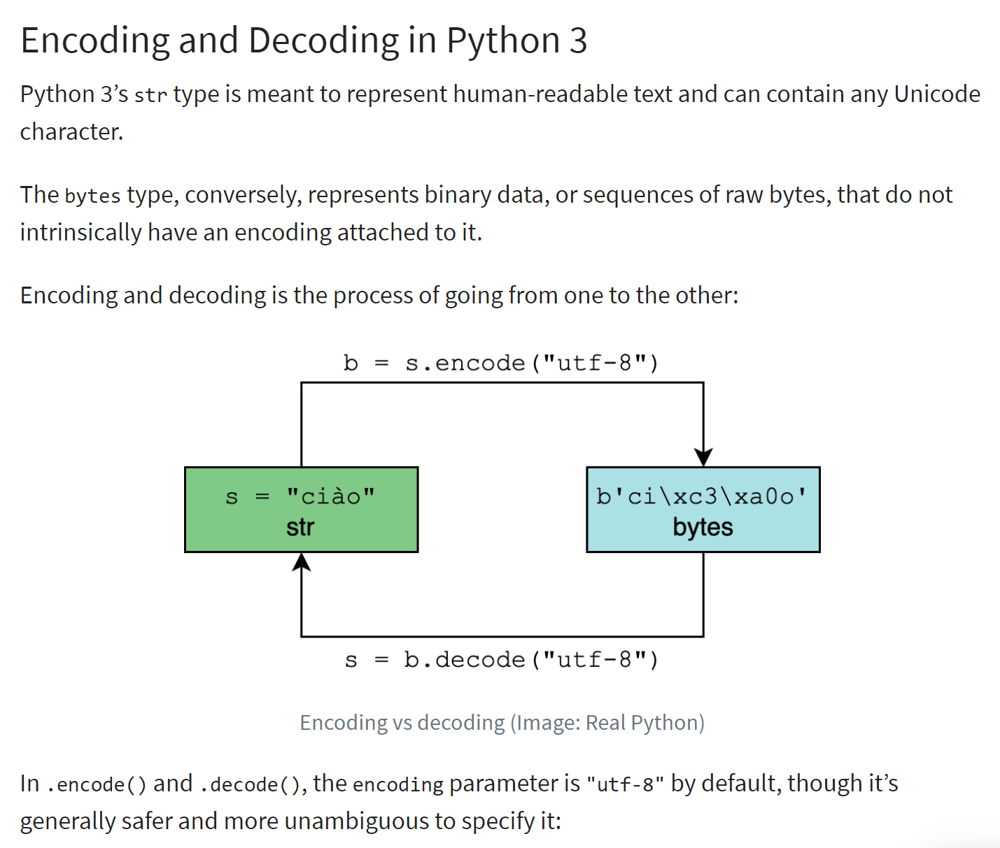

4. Les chaînes de caractères

4.1. Script [str_01] : notation des chaînes de caractères
Le script [str_01] est le suivant :
| # chaînes de caractères
# trois notations possibles
chaine1 = "un"
chaine2 = 'deux'
chaine3 = """hélène va au
marché acheter des légumes"""
# affichage
print(f"chaine1=[{chaine1}], chaine2=[{chaine2}], chaine3=[{chaine3}]")
|
Commentaires
- ligne 3 : une chaîne délimitée par des guillemets " ;
- ligne 4 : une chaîne délimitée par des apostrophes ' ;
- ligne 5 : une chaîne délimitée par des triples guillemets """. Dans ce cas, la chaîne peut s'étaler sur plusieurs lignes ;
Les résultats sont les suivants :
| C:\Data\st-2020\dev\python\cours-2020\python3-flask-2020\venv\Scripts\python.exe C:/Data/st-2020/dev/python/cours-2020/python3-flask-2020/strings/str_01.py
chaine1=[un], chaine2=[deux], chaine3=[hélène va au
marché acheter des légumes]
Process finished with exit code 0
|
4.2. Script [str_02] : les méthodes de la classe <str>
Le script [str_02] présente quelques-unes des méthodes de la classe <str> qui est la classe des chaînes de caractères :
| # fonctions sur chaînes de caractères
# chaîne en minuscules
print(f"'ABCD'.lower()={'ABCD'.lower()}")
# chaîne en majuscules
print(f"'abcd'.upper()={'abcd'.upper()}")
# caractère n° 2
print(f"'cheval[2]={'cheval'[2]}")
# sous-chaîne avec les caractères 5 et 6
print(f"'caractères accentués'[5:7]={'caractères accentués'[5:7]}")
# sous-chaîne à partir du caractère 4 inclus
print(f"'caractères accentués'[4:]={'caractères accentués'[4:]}")
# sous-chaîne jusqu'au caractère 6 exclus
print(f"'caractères accentués'[:5]={'caractères accentués'[:5]}")
# longueur de la chaîne
print(f"len('123')={len('123')}")
# élimination des blancs qui précèdent et suivent la chaîne
print(f"' abcd '.strip()=[{' abcd '.strip()}]")
# élimination des blancs qui suivent la chaîne
print(f"' abcd '.rstrip()=[{' abcd '.rstrip()}]")
# élimination des blancs qui précèdent la chaîne
print(f"' abcd '.lstrip()=[{' abcd '.lstrip()}]")
# le terme blanc recouvre en fait différents caractères
str = ' \r\nabcd \t\f'
print(f"str.strip()=[{str.strip()}]")
# remplacement d'une sous-chaîne par une autre
print(f"'abcd'.replace('a','x')={'abcd'.replace('a', 'x')}")
print(f"'abcd'.replace('ab','xy')={'abcd'.replace('ab', 'xy')}")
# recherche d'une sous-chaîne : rend la position ou -1 si sous-chaîne pas trouvée
print(f"'abcd'.find('bc')={'abcd'.find('bc')}")
print(f"'abcd'.find('bc')={'abcd'.find('Bc')}")
# début d'une chaîne
print(f"'abcd'.startswith('ab')={'abcd'.startswith('ab')}")
print(f"'abcd'.startswith('x')={'abcd'.startswith('x')}")
# fin d'une chaîne
print(f"'abcd'.endswith('cd')={'abcd'.endswith('cd')}")
print(f"'abcd'.endswith('x')={'abcd'.endswith('x')}")
# passage d'une liste de chaînes à une chaîne
print(f"'[X]'.join(['abcd', '123', 'èéà'])={'[X]'.join(['abcd', '123', 'èéà'])}")
print(f"''.join(['abcd', '123', 'èéà'])={''.join(['abcd', '123', 'èéà'])}")
# passage d'une chaîne à une liste de chaînes
print(f"'abcd 123 cdXY'.split('cd')={'abcd 123 cdXY'.split('cd')}")
# récupérer les mots d'une chaîne
print(f"'abcd 123 cdXY'.split(None)={'abcd 123 cdXY'.split(None)}")
|
Les commentaires alliés aux résultats obtenus suffisent pour la compréhension du script. Les résultats sont les suivants :
| C:\Data\st-2020\dev\python\cours-2020\python3-flask-2020\venv\Scripts\python.exe C:/Data/st-2020/dev/python/cours-2020/python3-flask-2020/strings/str_02.py
'ABCD'.lower()=abcd
'abcd'.upper()=ABCD
'cheval[2]=e
'caractères accentués'[5:7]=tè
'caractères accentués'[4:]=ctères accentués
'caractères accentués'[:5]=carac
len('123')=3
' abcd '.strip()=[abcd]
' abcd '.rstrip()=[ abcd]
' abcd '.lstrip()=[abcd ]
str.strip()=[abcd]
'abcd'.replace('a','x')=xbcd
'abcd'.replace('ab','xy')=xycd
'abcd'.find('bc')=1
'abcd'.find('bc')=-1
'abcd'.startswith('ab')=True
'abcd'.startswith('x')=False
'abcd'.endswith('cd')=True
'abcd'.endswith('x')=False
'[X]'.join(['abcd', '123', 'èéà'])=abcd[X]123[X]èéà
''.join(['abcd', '123', 'èéà'])=abcd123èéà
'abcd 123 cdXY'.split('cd')=['ab', ' 123 ', 'XY']
'abcd 123 cdXY'.split(None)=['abcd', '123', 'cdXY']
Process finished with exit code 0
|
4.3. Script [str_03] : codage des chaînes de caractères (1)
Le script [str_03] présente des notions sur le codage des chaînes de caractères :
| # codage des caractères
# chaîne de type str
str = "hélène va au marché acheter des légumes"
print(f"str=[{str}, type={type(str)}]")
# encodage utf-8
print("--- utf-8")
bytes1 = str.encode('utf-8')
print(f"bytes1={bytes1}, type={type(bytes1)}")
bytes2 = bytes(str, 'utf-8')
print(f"bytes2={bytes2}, type={type(bytes2)}")
# encodage iso-8859-1
print("--- iso-8859-1")
bytes1 = str.encode('iso-8859-1')
print(f"bytes1={bytes1}, type={type(bytes1)}")
bytes2 = bytes(str, 'iso-8859-1')
print(f"bytes2={bytes2}, type={type(bytes2)}")
# encodage latin1=iso-8859-1
print("--- latin1")
bytes1 = str.encode('latin1')
print(f"bytes1={bytes1}, type={type(bytes1)}")
bytes2 = bytes(str, 'latin1')
print(f"bytes2={bytes2}, type={type(bytes2)}")
|
L'encodage d'une chaîne de caractère de type <str> produit une chaîne binaire où chaque caractère de la chaîne a été représenté par un ou plusieurs octets. Il existe différents types d'encodage. Le script ci-dessus présente les deux plus courants en occident "utf-8" et "iso-8859-1" dit aussi "latin1.
Le principe de l'encodage / décodage est illustré ci-dessous (ref. |https://realpython.com/python-encodings-guide/ |) :

Commentaires
- lignes 4-5 : la chaîne de caractères initiale qui va être encodée. Les instances du type <str> sont des chaînes unicode |https://docs.python.org/3/howto/unicode.html|, |https://realpython.com/python-encodings-guide/ | ;
- lignes 6-11 : deux façons pour encoder en UTF68 une chaîne de caractères :
- ligne 8 : str.encode('utf-8) ;
- ligne 10 : bytes(str, 'utf-8');
- lignes 12-17 : on refait la même chose avec l'encodage 'iso-8859-1' ;
- lignes 18-23 : 'latin1' est un autre nom de l'encodage 'iso-8859-1' ;
Les résultats sont les suivants :
| C:\Data\st-2020\dev\python\cours-2020\python3-flask-2020\venv\Scripts\python.exe C:/Data/st-2020/dev/python/cours-2020/python3-flask-2020/strings/str_03.py
str=[hélène va au marché acheter des légumes, type=<class 'str'>
--- utf-8
bytes1=b'h\xc3\xa9l\xc3\xa8ne va au march\xc3\xa9 acheter des l\xc3\xa9gumes', type=<class 'bytes'>
bytes2=b'h\xc3\xa9l\xc3\xa8ne va au march\xc3\xa9 acheter des l\xc3\xa9gumes', type=<class 'bytes'>
--- iso-8859-1
bytes1=b'h\xe9l\xe8ne va au march\xe9 acheter des l\xe9gumes', type=<class 'bytes'>
bytes2=b'h\xe9l\xe8ne va au march\xe9 acheter des l\xe9gumes', type=<class 'bytes'>
--- latin1
bytes1=b'h\xe9l\xe8ne va au march\xe9 acheter des l\xe9gumes', type=<class 'bytes'>
bytes2=b'h\xe9l\xe8ne va au march\xe9 acheter des l\xe9gumes', type=<class 'bytes'>
Process finished with exit code 0
|
Commentaires
- ligne 4 : on voit que les caractères accentués ont été codés sur deux octets :
- é : [\xc3\xa9] qui est la suite binaire 11000011 10101001 ;
- è : [\xc3\xa8] qui est la suite binaire 11000011 10101000 ;
- lignes 7 : avec le codage iso-8859-1, ces deux caractères accentués sont codés différemment :
- é : [\xe9] qui est la suite binaire 11101001 ;
- è : [\xe8] qui est la suite binaire 11101000 ;
4.4. Script [str_04] : encodage des chaînes de caractères (2)
Le script [str_04] présente deux autres types d'encodage : 'base64' et 'quoted-printable'. Ces deux encodages n'encodent pas des chaînes de caractères Unicode mais des objets binaires. Par exemple, lorsqu'on attache un document Word à un mail, celui-ci va subir l'un des deux encodages selon le gestionnaire de courrier utilisé. Ce sera le cas pour la plupart des fichiers attachés.
Le script est le suivant :
| # encodage / décodage
import codecs
# chaîne
print("---- chaîne unicode")
str1 = "hélène va au marché acheter des légumes"
print(f"str1=[{str1}], type(str1)={type(str1)}")
# encodage utf-8
print("---- chaîne unicode -> binaire utf-8")
bytes1 = bytes(str1, "utf-8")
print(f"bytes1=[{bytes1}], type(bytes1)={type(bytes1)}")
# décodage utf-8
print("---- binaire utf-8 -> chaîne unicode")
str2 = bytes1.decode("utf-8")
print(f"str2=[{str2}], type(str2)={type(str2)}")
print(f"str2==str1={str2 == str1}")
# encodage iso-8859-1
print("---- chaîne unicode -> binaire iso-8859-1")
bytes2 = bytes(str1, "iso-8859-1")
print(f"bytes2=[{bytes2}], type(bytes2)={type(bytes2)}")
# décodage iso-8859-1
print("---- binaire iso-8859-1 -> chaîne unicode")
str3 = bytes2.decode("iso-8859-1")
print(f"str3=[{str3}], type(str3)={type(str3)}")
print(f"str3==str1={str3 == str1}")
# erreur de décodage - bytes1 est en utf-8 - on le décode en iso-8859-1
print("--- binaire utf-8 (décodage iso-8859-1) --> chaîne unicode")
str4 = bytes1.decode("iso-8859-1")
print(f"str4=[{str4}], type(str4)={type(str4)}")
# encodage utf-8 d’une chaîne Unicode
print("---- chaîne unicode -> binaire utf-8")
bytes3 = codecs.encode(str1, "utf-8")
print(f"bytes3=[{bytes3}], type(bytes3)={type(bytes3)}")
# encodage d'une chaîne binaire UTF-8 en base64
print("---- binaire utf-8 -> binaire base64")
bytes4 = codecs.encode(bytes1, "base64")
print(f"bytes4=[{bytes4}], type(bytes4)={type(bytes4)}")
# retour à la chaîne unicode d'origine
print("---- binaire base64 -> binaire utf-8 -> chaîne unicode")
str6 = codecs.decode(bytes4, "base64").decode("utf-8")
print(f"str6=[{str6}], type(str6)={type(str6)}")
# encodage d'une chaîne binaire en quoted-printable
print("---- binaire utf-8 -> binaire quoted-printable")
str7 = codecs.encode(bytes1, "quoted-printable")
print(f"str7=[{str7}], type(str7)={type(str7)}")
# retour à la chaîne unicode d'origine
print("---- binaire quoted-printable -> binaire utf-8 -> chaîne unicode")
str8 = codecs.decode(str7, "quoted-printable").decode("utf-8")
print(f"str8=[{str8}], type(str8)={type(str8)}")
|
Commentaires
- ligne 2 : le module [codecs] permet de faire les codages 'base64' et 'quoted-printable'. Il peut en faire beuacoup d'autres ;
- lignes 4-7 : la chaîne Unicode qui va subir divers encodages ;
- lignes 9-12 : encodage utf-8. on obtient un binaire ;
- lignes 14-18 : décodage utf-8 pour revenir à la chaîne Unicode d'origine ;
- lignes 20-29 : on répète le même processus avec l'encodage 'iso-8859-1' ;
- lignes 31-34 : on montre une erreur de décodage :
- ligne 33 : bytes1 est une chaîne binaire encodée en 'utf-8'. On la décode en 'iso-8859-1' ;
- lignes 36-39 : autre façon d'encoder une chaîne de caractères en utf-8 avec le module [codecs] ;
- lignes 41-44 : une chaîne binaire 'utf-8' est encodée en 'base64' ;
- lignes 46-49 : montrent comment passer de la chaîne binaire 'base64' à la chaîne unicode d'origine ;
- lignes 51-59 : on répète ce processus avec un encodage 'quoted-printable' au lieu de 'base64' ;
Les résultats sont les suivants :
| C:\Data\st-2020\dev\python\cours-2020\python3-flask-2020\venv\Scripts\python.exe C:/Data/st-2020/dev/python/cours-2020/python3-flask-2020/strings/str_04.py
---- chaîne unicode
str1=[hélène va au marché acheter des légumes], type(str1)=<class 'str'>
---- chaîne unicode -> binaire utf-8
bytes1=[b'h\xc3\xa9l\xc3\xa8ne va au march\xc3\xa9 acheter des l\xc3\xa9gumes'], type(bytes1)=<class 'bytes'>
---- binaire utf-8 -> chaîne unicode
str2=[hélène va au marché acheter des légumes], type(str2)=<class 'str'>
str2==str1=True
---- chaîne unicode -> binaire iso-8859-1
bytes2=[b'h\xe9l\xe8ne va au march\xe9 acheter des l\xe9gumes'], type(bytes2)=<class 'bytes'>
---- binaire iso-8859-1 -> chaîne unicode
str3=[hélène va au marché acheter des légumes], type(str3)=<class 'str'>
str3==str1=True
--- binaire utf-8 (décodage iso-8859-1) --> chaîne unicode
str4=[hélène va au marché acheter des légumes], type(str4)=<class 'str'>
---- chaîne unicode -> binaire utf-8
bytes3=[b'h\xc3\xa9l\xc3\xa8ne va au march\xc3\xa9 acheter des l\xc3\xa9gumes'], type(bytes3)=<class 'bytes'>
---- binaire utf-8 -> binaire base64
bytes4=[b'aMOpbMOobmUgdmEgYXUgbWFyY2jDqSBhY2hldGVyIGRlcyBsw6lndW1lcw==\n'], type(bytes4)=<class 'bytes'>
---- binaire base64 -> binaire utf-8 -> chaîne unicode
str6=[hélène va au marché acheter des légumes], type(str6)=<class 'str'>
---- binaire utf-8 -> binaire quoted-printable
str7=[b'h=C3=A9l=C3=A8ne=20va=20au=20march=C3=A9=20acheter=20des=20l=C3=A9gumes'], type(str7)=<class 'bytes'>
---- binaire quoted-printable -> binaire utf-8 -> chaîne unicode
str8=[hélène va au marché acheter des légumes], type(str8)=<class 'str'>
Process finished with exit code 0
|
- lignes 14-15 : un binaire utf-8 est décodé en chaîne Unicode avec le mauvais décodeur 'iso-8859-1'. Aussi certains caractères Unicode générés sont incorrects, ici les caractères accentués ;
- lignes 18-19 : le codage 'base64' consiste à utiliser 64 caractères ASCII (codés sur 7 bits) pour encoder un binaire quleconque. Cela augmente, comme on le voit, la taille du binaire de la chaîne ;
- lignes 22-23 : le codage 'quoted-printable' consiste lui aussi à utiliser des caractères ASCII (codés sur 7 bits) pour encoder un binaire quelconque ;
On se souviendra que lorsqu'on reçoit un binaire, du réseau internet par exemple, qui représente un texte, pour retrouver celui-ci il faut connaître les encodages qu'il a subis.